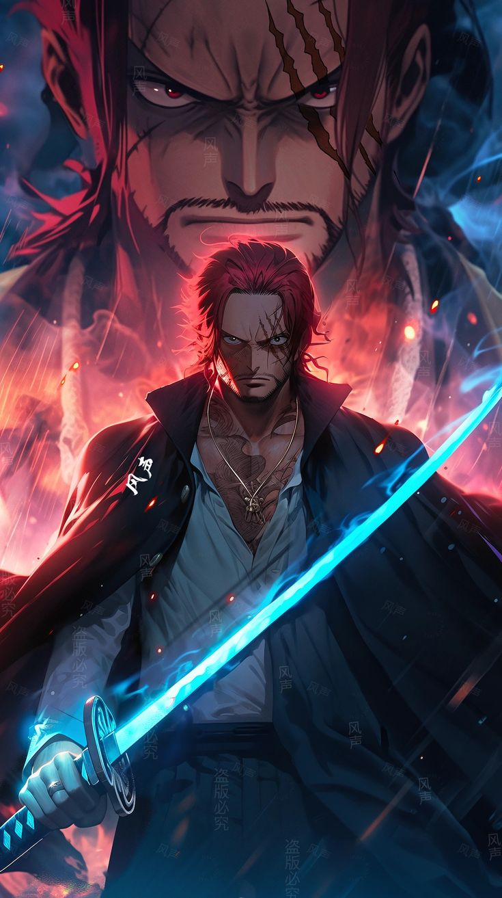

Yuji Itadori, lycéen membre du club d'occultisme, découvre un monde où les sentiments négatifs des humains engendrent des malédictions mortelles. Après avoir avalé un doigt de démon pour sauver ses amis, Yuji se retrouve possédé par Ryômen Sukuna, un démon redouté. Malgré tout, Yuji conserve le contrôle de son corps. Cependant, il est condamné à mort par l'organisation des exorcistes. Sa seule chance de survie est de trouver tous les doigts de Sukuna pour éliminer la menace une fois pour toutes. Ainsi débute l'aventure de Yuji Itadori dans le monde des exorcistes, où il doit affronter les malédictions et trouver un moyen de sauver sa vie.
Aliqua in incididunt qui nulla elit esse qui. Veniam aute eu velit aliqua deserunt elit elit qui aliqua nisi. Proident ex mollit reprehenderit ea exercitation.
Arcs naratifs: Arc Naissance de la Matrice : Yuji Itadori, un lycéen aux capacités exceptionnelles, est entraîné dans le monde des exorcistes après avoir ingéré un doigt maudit millénaire. Arc Petit Poisson et Retour de Bâton : Yuji est affecté à une mission avec l’exorciste de classe 1, Kento Nanami, et rencontre un Fléau nommé Mahito Arc Tournoi : Les personnages participent à un tournoi entre écoles d’exorcisme. Arc Instinct Grégaire : Cet arc explore davantage les personnages et leurs interactions Arc Trésor Caché / Mort Prématurée : Les exorcistes cherchent des objets maudits tout en faisant face à des menaces Arc Drame de Shibuya : lien boostrap_home Un événement majeur impliquant une grande bataille contre les Fléaux. Arc Exécution de Yuji : Yuji fait face à des conséquences pour ses actions précédentes. Arc Préparatifs de la Traque : Les personnages se préparent pour une grande confrontation. Arc Traque Meurtrière : Une chasse intense contre les Fléaux. Arc Bataille de Shinjuku : Une bataille se déroule dans le quartier de Shinjuku.
Tempor cillum magna proident aliquip minim nostrud nostrud. Sit qui excepteur eu proident tempor aute magna voluptate consequat labore esse occaecat. Cupidatat id est eu id qui ad sit cillum. Ad ea duis cupidatat ut reprehenderit cupidatat et velit deserunt eiusmod cillum aute cillum. Lorem cupidatat deserunt magna aliquip adipisicing non enim est exercitation esse in nulla.
